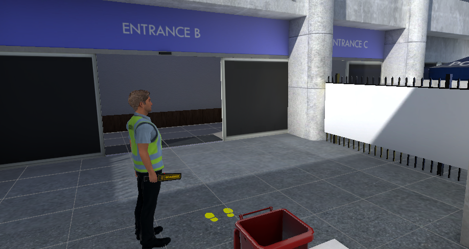

OVERVIEW
Bag Search & Wanding is a procedural VR training simulation for security staff at venues, transport hubs, and public events. Rather than watching a demonstration video, trainees physically perform the correct bag search and handheld wand procedures in a fully interactive 3D environment.
The simulation tracks procedural accuracy in real time, flags incorrect technique, and logs completion data for compliance reporting — reducing both training cost and on-the-job errors.
MY ROLE
Lead developer. I designed and built the procedural step-tracking system, all hand interaction mechanics, the NPC queue simulation, and the pass/fail assessment logic with detailed feedback reporting.
TECHNICAL HIGHLIGHTS
- Procedural step-tracker — validates correct sequence of search actions against a configurable procedure definition
- Physics-based hand interactions: wand grip, bag handling, item inspection using XR Interaction Toolkit
- NPC queue simulation — procedurally generated visitor characters with varied bag contents and behaviour
- Real-time technique feedback: wand angle, speed, and coverage area assessed against compliance thresholds
- LMS integration via xAPI (Tin Can) — session results sent directly to client learning management systems
ENGINEUnity (XR Toolkit)
LANGUAGEC#
PLATFORMMeta Quest 2/3
STATUSSHIPPED
REPORTINGxAPI / LMS
TYPEProcedural Simulation